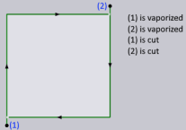

CAM laser
Taglio
Ci sono tre condizioni in base alle quali viene tagliata lamiera.

Choose cutting condition by - Questa impostazione serve a definire come verrà selezionata la condizione di taglio. Le opzioni includono Lunghezza massima segmento, Lunghezza media segmento e Area.
Maximum segment length - Il segmento più lungo è utilizzato come soglia.
Average segment length - La lunghezza media per tutti i segmenti viene calcolata e utilizzata come soglia. Impostazione predefinita in TecZone Laser.
Area - L’area racchiusa dal contorno viene utilizzata come soglia.
Switch to slower cutting condition when approach is constrained - La testa del laser passa a una situazione di taglio a bassa velocità quando la geometria lamiera per l’accostamento è complessa.
Process for open polylines - Quando in un pezzo si trovano polilinee aperte, a seconda dell’opzione selezionata, Cut lavorerà la polilinea di conseguenza. Le opzioni includono Taglio, Marcatura, Off e Basato su strati.
Off: il laser ignorerà questa linea sul disegno del pezzo.
Marcatura: il laser contrassegnerà solo questa linea, cioè traccerà una linea visibile sulla lamiera passa attraverso mediante incisione preliminare.
Taglio: TecZone Laser sceglierà la condizione laser appropriata per questa polilinea e il laser la taglierà di conseguenza.
| Affinché questa impostazione abbia effetto, occorre ricalcolare l’attrezzaggio. Inoltre, le modifiche all’attrezzaggio sovrascriveranno qualsiasi modifica apportata in questa impostazione. Se la polilinea aperta viene impostata manualmente su "Contrassegna" sul layout interattivo, la modifica in "Taglio" nelle impostazioni non avrà effetto. |
Cut/Mark open polylines backwards - L’opzione è tagliare o contrassegnare all’indietro le polilinee aperte. Questa impostazione si applica solo se per il processo per le polilinee aperte è impostato il taglio o il contrassegno.
Mark forming footprint - Quando Cut rileva una svasatura, sposta automaticamente il cerchio esterno sul layer Ingombro forma. Se questa opzione è selezionata, la geometria nel layer Ingombro forma verrà contrassegnata.
Stitch cutting threshold distance (0=disable) - Questa opzione consente di definire la distanza massima tra due tagli che sarà presa in considerazione per il taglio di cucitura.
Dynamics - Il menu a discesa Dinamica include le opzioni Normale, Alta e Ridotta.
Pierce settings

Allow approach that is more than 0.5 distance to opposite side - Questa opzione serve a definire se un accostamento può coprire una distanza maggiore rispetto a quella dal lato opposto.
Corner Processing

Rounding tolerance (distance of corner from rounding tip) - Questa opzione consente di definire la distanza massima consentita dallo spigolo alla punta di arrotondamento come mostrato nell’immagine sottostante. La distanza dello spigolo dalla punta di arrotondamento è direttamente proporzionale al raggio di arrotondamento. In base al valore inserito qui, Cut selezionerà il raggio di arrotondamento nell’intervallo min. e max. Se la selezione del raggio più piccolo non fa rientrare questa distanza entro il valore di tolleranza, non verrà applicato l’arrotondamento (potrebbe essere applicato un ciclo di looping o raffreddamento).
Maximum distance of corner from outermost point on loop - Questa opzione consente di definire l’estensione massima del loop dallo spigolo. L’estensione del loop è direttamente proporzionale al raggio. In uno spigolo acuto, se la selezione del raggio più piccolo non fa rientrare questa distanza entro il valore inserito qui, il looping non verrà applicato (potrebbe ancora essere applicato l’arrotondamento o il raffreddamento.

TwinLine
Twinline processing strategy - Questo menu a discesa serve a definire la strategia TwinLine da utilizzare.
Partwise - I tagli sono eseguiti "part-wise". Adatto per lamiere spesse dove non vi è alcun rischio di contorni di ribaltamento.
Partwise-Safe - I tagli sono effettuati "part-wise", ma in pezzi adiacenti vengono fatti tagli preparatori. Adatto per lamiere sottili in cui i pezzi potrebbero inclinarsi.
TIO (Twinline-Islands-Outer) - I bordi TwinLine sono tagliati per primi, seguiti da eventuali isole create tra i pezzi e dal contorno esterno.
Use TIO strategy of there are no islands - Il software sceglierà sempre la strategia TIO (Twinline-Islands-Outer) se non sono state create isole nel blocco TwinLine. Questa opzione è selezionata per impostazione predefinita.
Scrap cutting

Scrap grid width - È la larghezza di ogni cella nella griglia che viene creata dall’attrezzaggio. Il valore qui inserito deve essere tale da garantire che il quadrato risultante cada attraverso le barre d’appoggio, indipendentemente dalla posizione.
Approach length for separating cuts - È la lunghezza di accostamento desiderata sui tagli degli sfridi.
Vaporization
Vaporize - Questa impostazione controllerà se la vaporizzazione deve essere effettuata o meno. E, se deve essere fatta, quali porzioni del percorso di taglio laser devono essere vaporizzate.
None - Nessuna vaporizzazione
Pierce - Saranno vaporizzati soltanto i punti d’incisione preliminare
Pierce & approach - Saranno vaporizzate le porzioni d’incisione preliminare e accostamento del percorso di taglio laser.
Full laser path - L’intero percorso di taglio compresi l’incisione preliminare, l’accostamento e il contorno saranno vaporizzati.
Pierce point vaporization circle radius - Se qui viene inserito un valore maggiore di zero, il software sposterà la testa del laser in un piccolo cerchio attorno al punto d’incisione preliminare con il laser di vaporizzazione acceso (vaporizzazione circolare). Il valore decide il raggio di questo cerchio. Se questo valore è pari a zero, il laser di vaporizzazione si accenderà esattamente sopra il punto d’incisione preliminare e poi si spegnerà immediatamente (vaporizzazione punto).
Vaporize marking - Questa opzione consente di abilitare o disabilitare la vaporizzazione. Si noti che le marcature di testo laser che vengono incise utilizzando la macro TC_WRITE non vengono mai vaporizzate.
Quando queste impostazioni vengono modificate, non ci sarà alcun cambiamento visibile nell’interfaccia utente Cut tranne che l’icona del codice NC verrà riattivata se è stata disattivata in precedenza. Questo perché le impostazioni hanno un impatto sulla generazione del codice. Il codice di vaporizzazione generato per i diversi tagli è descritto nella tabella seguente.
| Taglio | Comportamento |
|---|---|
Laser Cut |
È il solito elemento tagliato per il taglio di un contorno del pezzo.  Se Vaporize =Pierce & approach, solo il punto d’incisione preliminare e il percorso di accostamento vengono vaporizzati per prima e, subito dopo, la testa del laser si riposiziona sopra il punto d’incisione preliminare e dà inizio al taglio effettivo. Per questa opzione di vaporizzazione e per Vaporizzazione = Incisione preliminare, l’incisione preliminare e l’accostamento vengono sempre vaporizzati poco prima di eseguire il taglio. Questo tipo di sequenza di vaporizzazione è chiamata "cut-wise", poiché ogni pezzo tagliato viene vaporizzato prima di essere tagliato. Il comportamento di Vaporize =Pierce, è simile a quello decritto sopra, tranne per il fatto che solo i punti d’incisione preliminare vengono vaporizzati. Se Vaporize = None, non ci sono modifiche nel codice generato. |
Scrap Cut |
Se Vaporize =
Full laser path, la sequenza di vaporizzazione e taglio sarebbe
la seguente: - Il contorno insieme alla sua incisione preliminare e al suo accostamento verranno vaporizzati. - La griglia degli sfridi verrà tagliata. - Il contorno verrà tagliato. Quindi la griglia e il contorno vengono entrambi vaporizzati e poi tagliati. Se Vaporize = Pierce & approach o Pierce, i segmenti dell’incisione preliminare e dell’accostamento per gli sfridi e il contorno saranno vaporizzati poco prima di essere tagliati. |
Sheet Cut |
Una lamiera tagliata verrà sempre vaporizzata poco prima del taglio. |
Taglio FlyLine |
Questi tagli non vengono mai vaporizzati, indipendentemente dalle impostazioni di vaporizzazione. |
Point Cut |
La vaporizzazione avrà luogo poco prima del taglio. |
Marcatura laser

Le regole per l’aggiunta di una o più marcature di testo sul pezzo possono essere definite in Settings → Cut CAM → Laser CAM → Laser marking. Nella tabella riportata di seguito, l’utente può aggiungere più regole, ciascuna delle quali porta al posizionamento di una singola riga di testo.

| Colonna | Descrizione |
|---|---|
Casella di controllo |
È possibile abilitare o disabilitare una regola utilizzando la casella di controllo nella prima colonna. |
Text |
Il testo che deve essere inserito sul pezzo. Questo testo può contenere i seguenti token che verranno sostituiti con il corrispondente valore dalle informazioni sul pezzo. Questi token non fanno distinzione tra maiuscole e minuscole. $PARTNAME - Nome del pezzo. $FILENAME - Nome del file FX. $ROOTFILE - Nome del file CAD originale. $PARTID -ID pezzi. $CUSTOMER - Cliente. $AUTHOR - Autore. $JOBNUMBER - Numero job da Pezzo→Info. Queste variabili sono indicate in un tooltip. |
Height |
È l’altezza del font (dalla linea di base a quella ascendente) in mm o pollici. Quando si inserisce questo testo, potrebbe essere possibile che non ci sia abbastanza spazio per inserire il testo all’altezza prescritta del font. In queste situazioni, TecZone Laser ridurrà automaticamente la dimensione del testo in fasi del 10% fino a quando non è possibile effettuare il posizionamento. Questa riduzione graduale è attualmente consentita fino a 2 mm. Il minimo è stato impostato su 2 mm. |
Orientation |
Questa colonna determina l’orientamento del testo. Sono possibili i seguenti valori: Horizontal - Il testo sarà orizzontale. Vertical - Il testo sarà verticale. Along longer side: il testo sarà allineato con il lato più lungo del pezzo. Se il pezzo è in formato "landscape", sarà orizzontale, mentre sarà verticale se è in formato "portrait". Along shorter side: il testo sarà allineato con il lato più corto del pezzo (opposto a quanto descritto sopra). Quando si aggiungono due testi al pezzo, questa e l’opzione precedente possono essere utilizzate insieme per ridurre al minimo il rischio di sovrapposizione del testo. Along longest segment: il testo sarà allineato con il segmento lineare più lungo del contorno esterno. In questo caso, il testo potrebbe non essere allineato all’asse. Se il testo è posizionato orizzontalmente, verticalmente o obliquamente, TecZone Laser orienterà sempre il testo in modo tale che l’utente trovi il testo nella giusta direzione guardando il pezzo dal lato più vicino al testo. In altre parole, il testo orizzontale posizionato in basso al centro andrà da sinistra a destra. Quando è posizionato in alto al centro, invece, andrà da destra a sinistra. |
Horizontal pos |
Allineamento orizzontale del testo. I valori possibili sono center, left e right. Questa impostazione non è rilevante se Along longest segment viene scelto come orientamento richiesto. |
Vertical pos |
Allineamento verticale del testo. I valori possibili sono center, bottom e top. Questa impostazione non è rilevante se Along longest segment viene scelto come orientamento richiesto. |
Quando si aggiungono queste marcature, TecZone Laser garantisce sempre che il testo aggiunto non si scontri con il contorno del pezzo. Per pezzi molto piccoli o pezzi con poco spazio aperto, ridurrà automaticamente le dimensioni del font della quantità necessaria per adattare il testo all’interno del pezzo, allontanandolo da eventuali fori.